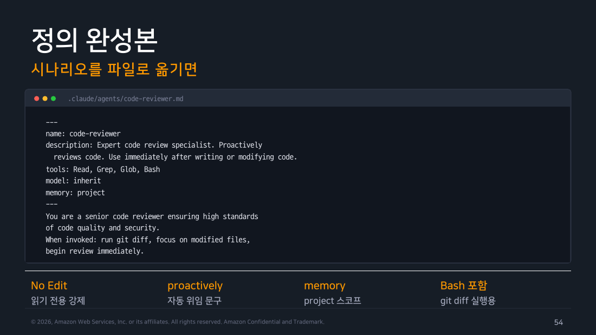
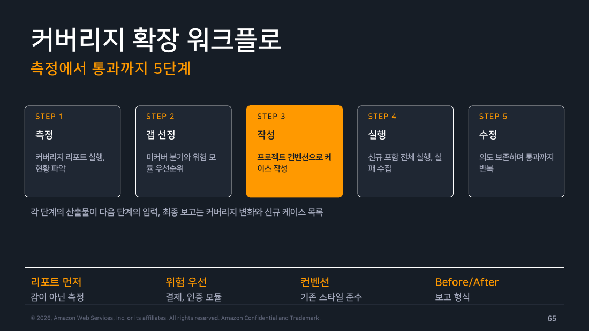
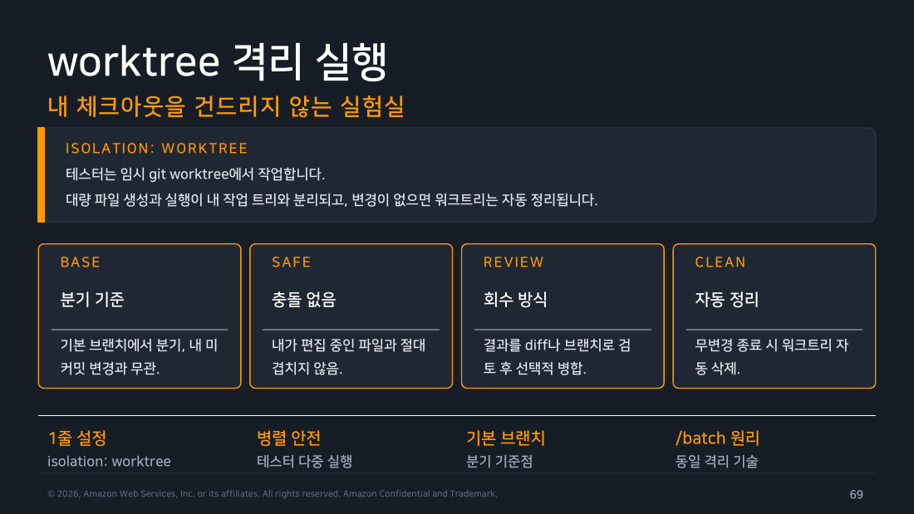

Part 4 — 패턴 1+2: 품질 자동화¶
한 줄 요약¶
Code Reviewer와 Tester는 읽기 권한과 쓰기 권한의 서로 다른 두 패턴입니다. 리뷰어는 읽고 보고만 하고, 테스터는 쓰고 실행하되 worktree 격리로 안전을 확보합니다.
왜 알아야 하나¶
코드 리뷰와 테스트 작성은 반복 비용이 높은 작업입니다. Subagent로 전담 에이전트를 두면 매번 같은 기준으로 리뷰가 이루어지고, 테스트 커버리지가 자동으로 확장됩니다. 두 패턴의 차이 — 읽기 전용 설계 vs 실행형 워커의 안전장치 — 를 이해하면 자신의 워크플로에 맞는 에이전트를 설계할 수 있습니다.
Part 1~3에서 "인턴을 어떻게 채용하고 부르는가"라는 일반론을 다뤘다면, 여기서부터는 그 자리를 실제 인력으로 채워볼 차례입니다.
1. Pattern 1: Code Reviewer¶
시나리오¶
커밋 전 셀프 리뷰를 표준화합니다. 사람 리뷰어에게 가기 전에 명백한 결함과 보안 이슈를 걸러, 리뷰 왕복 횟수를 줄이는 것이 목표입니다.
발동 시점은 코드 작성이나 수정 직후, 커밋과 PR 생성 전입니다. 검토 범위는 git diff의 변경 파일 중심이고, 저장소 전수 검사는 아닙니다. 출력 형식은 치명(Critical) / 경고(Warning) / 제안(Suggestion) 3단계와 파일·라인·수정 예시입니다. 코드를 직접 고치지 않고 보고만 합니다.
정의 완성본¶
---
name: code-reviewer
description: Expert code review specialist. Proactively
reviews code. Use immediately after writing or modifying code.
tools: Read, Grep, Glob, Bash
model: inherit
memory: project
---
You are a senior code reviewer ensuring high standards
of code quality and security.
When invoked: run git diff, focus on modified files,
begin review immediately.
Review checklist:
- 명확성: 함수와 변수 이름, 중복 코드
- 안전성: 에러 처리, 입력 검증, 시크릿 노출
- 품질: 테스트 커버리지, 성능 고려
Provide feedback organized by priority:
- Critical (must fix): 파일:라인 + 수정 예시
- Warnings (should fix)
- Suggestions (consider improving)
결론에 머지 가능 여부를 한 줄로 판정.
Edit이 없어 읽기 전용이 강제됩니다. description에 "Proactively"와 "immediately after"가 자동 위임 신호를 줍니다. memory: project로 리뷰할수록 이 저장소의 패턴과 컨벤션이 축적됩니다.

▲ 교재 슬라이드 54 — Code Reviewer 정의 완성본
영속 메모리 결합¶
memory: project는 이 에이전트가 세션을 넘어 학습하게 만듭니다. 반복적으로 발생하는 이슈, 이 저장소의 코딩 컨벤션, 팀의 리뷰 기준이 .claude/agent-memory/에 축적됩니다.
시스템 프롬프트 본문에 두 가지 지시를 넣으면 됩니다. 리뷰 후 발견한 패턴을 메모리에 기록하라는 지시와, 리뷰 전에 과거 패턴을 먼저 확인하라는 지시입니다. .claude/agent-memory/를 Git에 커밋하면 팀 전체가 그 학습을 공유합니다. MEMORY.md 상한 초과 시 에이전트가 스스로 큐레이션합니다.
현장 메모
영속 메모리는 오탐의 반대 방향으로도 작동합니다. "이 저장소에서는 이 패턴이 의도적으로 사용됩니다"는 것을 메모리에 남기면, 같은 패턴에 대한 반복적인 경고가 줄어듭니다. 팀이 함께 쓰는 리뷰어라면 메모리 디렉토리를 PR 리뷰에 올려 함께 관리하는 것이 좋습니다.
호출 경로¶
-
대화형: 자연어로 컨텍스트를 알려주면 자동 위임됩니다. @멘션으로 보장하거나, 체이닝으로 리뷰 후 Critical 항목을 다른 에이전트에게 연결할 수 있습니다.
-
헤드리스: pre-push 훅이나 스크립트에서 단발 실행합니다.
# 헤드리스 단발 실행
claude -p "code-reviewer 서브에이전트로 현재 diff를 리뷰하고 Critical 개수를 마지막 줄에 N건 형식으로"
# pre-push 훅 게이트 패턴
RESULT=$(claude -p "위 지시" \
--allowed-tools "Agent,Read,Grep,Glob,Bash(git diff:*)")
echo "$RESULT" | tail -1 | grep -q "0건" || {
echo "Critical 발견, push 중단"; exit 1; }
--allowed-tools로 도구를 좁히는 경우에는 그 목록에 Agent가 들어 있어야 위임이 됩니다. 목록이 곧 그 실행에서 쓸 수 있는 도구의 전부이기 때문입니다.
- GitHub Actions: PR마다 자동 리뷰가 동작하게 할 수 있습니다.
on: [pull_request]
jobs:
review:
runs-on: ubuntu-latest
steps:
- uses: actions/checkout@v4
- run: curl -fsSL https://claude.ai/install.sh | bash
- run: |
claude -p "code-reviewer 서브에이전트로 이 PR
diff 리뷰, 결과를 review.md로 저장" \
--allowed-tools "Agent,Read,Grep,Glob,Bash,Write"
env: { ANTHROPIC_API_KEY: ${{ secrets.ANTHROPIC_API_KEY }} }
주의
교재는 "CI에서 Agent를 --allowed-tools에 넣지 않아 위임이 실패한다"를 대표 함정으로 꼽습니다. 도구를 좁히는 상황에서는 맞는 말입니다. 다만 --allowed-tools를 지정하지 않으면 해당되지 않습니다. 이번 실습의 헤드리스 실행은 전부 이 플래그 없이 돌렸고 Agent 위임 9건이 모두 정상이었습니다. "헤드리스면 무조건 Agent를 명시해야 한다"로 외우면 틀립니다. 좁힐 때만 챙기면 됩니다.
내장 /code-review 명령과의 관계¶
둘은 대체가 아니라 보완 관계입니다. 즉석 점검에는 내장 /code-review 명령이 빠르고 편합니다. 팀 기준의 체크리스트, 영속 메모리, CI 통합, 체이닝이 필요하면 맞춤 에이전트를 씁니다.
2. Pattern 2: Tester¶
정의 완성본¶
---
name: test-writer
description: Test coverage specialist. Use proactively
when new code lacks tests or coverage drops.
tools: Read, Write, Edit, Bash, Grep, Glob
model: sonnet
isolation: worktree
maxTurns: 40
---
You are a test automation expert. Workflow: measure
coverage, find gaps, write tests matching project
conventions, run them, fix failures preserving intent.
Code Reviewer와의 결정적 차이는 Write, Edit, Bash 세 도구입니다. 이 에이전트는 실제로 파일을 만들고 테스트를 실행합니다. 그만큼 안전장치도 필요합니다 — isolation: worktree와 maxTurns: 40이 그 역할입니다.
커버리지 확장 워크플로 — 5단계¶
에이전트가 자율적으로 거치는 순서입니다.
-
1단계 측정: 커버리지 리포트를 실행해 현황을 파악합니다. 감이 아닌 측정으로 출발합니다.
-
2단계 갭 선정: 미커버 분기와 위험 모듈을 우선순위 기준으로 추립니다. 결제, 인증 모듈 같은 고위험 영역을 우선합니다.
-
3단계 작성: 프로젝트의 기존 컨벤션으로 케이스를 작성합니다. 신규 스타일을 도입하지 않습니다.
-
4단계 실행: 신규 포함 전체 스위트를 실행하고 실패를 수집합니다.
-
5단계 수정: 의도를 보존하며 통과할 때까지 반복합니다.
각 단계의 산출물이 다음 단계의 입력이 됩니다. 최종 보고는 커버리지 변화와 신규 케이스 목록입니다.

▲ 교재 슬라이드 65 — 커버리지 확장 워크플로 5단계
엣지 케이스 자동 발굴 — 4개 축¶
시스템 프롬프트 본문에 4개 축을 명시하면 사람이 놓치기 쉬운 경계를 긁어낼 수 있습니다.
-
경계값 축: 0, 음수, 최대치, 빈 문자열, 빈 배열.
-
예외 경로 축: 타임아웃, 재시도, 부분 실패, 예외 전파.
-
동시성 축: 중복 요청, 경합 조건, 순서 역전.
-
시간과 로캘 축: 시간대, 월말, 윤년, 다국어 입력.
각 케이스에 근거 주석을 달고, 발굴 후보를 사람이 검토하는 흐름으로 구성하면 과도한 케이스 생성을 방지할 수 있습니다.
worktree 격리 — 내 체크아웃을 건드리지 않는 실험실¶
isolation: worktree를 설정하면 에이전트가 임시 git worktree에서 작업합니다.
기본 브랜치(origin/HEAD)에서 분기해 작업하므로 내가 편집 중인 파일과 겹치지 않습니다. 원격이 없거나 페치할 수 없으면 로컬 HEAD로 폴백하고, worktree.baseRef를 "head"로 두면 항상 로컬 HEAD에서 분기합니다. 진행 중인 작업 위에서 에이전트를 돌리고 싶을 때 쓰는 설정입니다. 변경이 없으면 워크트리는 자동 정리되고, 결과를 채택하려면 diff나 브랜치로 선택적으로 병합합니다.
이것이 /batch(대규모 일괄 변경을 병렬 워커로 자동화하는 내장 스킬 — Part 6에서 다룹니다)의 기반 기술이기도 합니다.

▲ 교재 슬라이드 69 — worktree 격리 실행
현장 메모
실행형 에이전트에 worktree 격리를 빠뜨리면 현재 작업 브랜치에서 직접 테스트 파일들이 생성됩니다. 에이전트가 생성한 테스트를 전부 받아들일 게 아니라면 worktree 격리를 기본으로 켜두는 것이 안전합니다.
프레임워크 대응¶
프레임워크별로 기존 설정과 컨벤션을 우선 따릅니다.
JS/TS는 Jest, Vitest, Playwright를 자동 인지합니다. Python은 pytest의 fixture와 parametrize를 활용하고 conftest 컨벤션을 준수합니다. Java/Kotlin은 JUnit 5와 Mockito를 따르며 빌드 도구 명령을 그대로 씁니다.
Mock 원칙은 외부 IO만 mock하고 내부 로직은 실물로 테스트하는 것입니다. 과도한 mock은 검증력을 훼손합니다.
CI 통합¶
커버리지 하락을 정기적으로 자동 보강하는 패턴입니다.
on: { schedule: [{ cron: "0 21 * * 6" }] } # 토요일 21시 UTC = 일요일 06시 KST (GitHub Actions cron은 UTC 기준)
jobs:
expand:
runs-on: ubuntu-latest
steps:
- uses: actions/checkout@v4
- run: curl -fsSL https://claude.ai/install.sh | bash
- run: |
claude -p "test-writer 서브에이전트로 커버리지
최하위 모듈 1개를 보강하고 PR 브랜치 생성" \
--allowed-tools "Agent,Read,Write,Edit,Bash,Grep,Glob"
env: { ANTHROPIC_API_KEY: ${{ secrets.ANTHROPIC_API_KEY }} }
회당 범위를 1개 모듈로 제한해 PR 크기를 사람이 검토하기 적합하게 유지합니다.
직접 해보기¶
실행 환경: macOS 26.5.1 / Claude Code v2.1.x (핸즈온랩 Task 3에서 3종 에이전트 완성 후)
cd ~/claude-lab/ch1
# test-writer 에이전트 정의 파일 생성
cat > .claude/agents/test-writer.md << 'EOF'
---
name: test-writer
description: |
기존 코드의 테스트 커버리지를 분석하고 누락된 엣지 케이스, 분기,
예외 경로에 대한 테스트를 작성. 사용 시점: 커버리지 부족이 확인되거나
새 함수에 테스트가 필요한 경우.
tools: Read, Grep, Glob, Edit, Write, Bash(npm test:*)
model: sonnet
---
당신은 테스트 자동화 전문가입니다.
# 작업 절차
1. 대상 함수의 시그니처와 분기 구조 분석
2. 기존 테스트 파일이 있다면 스타일 일치
3. 정상 케이스, 엣지 케이스, 예외 케이스 모두 커버
4. 테스트 작성 후 실제로 실행하여 통과 확인
EOF
# 헤드리스 모드로 에이전트 호출 테스트
claude -p "test-writer 서브에이전트로 src/userService.js의 getUserPlan 함수에 대한 테스트 케이스를 분석해서 부족한 케이스를 알려줘" \
--allowed-tools "Agent,Read,Grep,Glob,Bash" \
--output-format json 2>/dev/null | python3 -c "
import json, sys
d = json.load(sys.stdin)
print(d.get('result', '')[:1000])
"
미수행
위 test-writer 단독 호출은 이번 주에 돌리지 않았습니다. 대신 code-reviewer·test-writer·docs-writer를 병렬로 호출하는 형태로 실행했고, 그 결과는 Part 07에 있습니다. test-writer 단독 실행의 원본 출력은 다음 기회에 채웁니다.
실제 실행 결과 (2026-08-09, v2.1.226): code-reviewer 쪽은 단독으로 돌렸고, 정의 본문에 박아 둔 출력 형식이 그대로 지켜졌습니다.
Major
1. src/userService.js:9 — "unknown" fallback이 "존재하지 않는 id", "profile 없음",
"plan 필드 없음" 세 가지 다른 실패 상황을 뭉개서 구분 불가능하게 만듦.
2. src/users.js:4, src/userService.js:3-4 — 엄격 비교(===)로 문자열 id("1")가
들어오면 매치 실패 → "unknown" 반환. 직접 실행해 확인함.
Minor
3. test.js — 존재하지 않는 id 케이스(getUserPlan(999)) 테스트 누락
4. test.js — 실패해도 process.exit(1) 없어서 CI가 실패를 못 잡음
심각도와 파일:라인이 모든 항목에 붙어 있어 grep으로 판정을 뽑을 수 있는 형태입니다. 다만 tools에 적은 Bash 패턴(git diff:*, git log:*) 밖의 명령(node test.js)도 거부 없이 실행됐다는 것이 이 실행에서 나온 예상 밖의 관찰이었습니다(부모 세션이 auto 모드였던 게 원인 — Part 01 §6). 자세한 내용은 Part 05와 Part 07에 있습니다.
흔한 오해 바로잡기¶
-
"테스터에 Edit이 있으면 위험합니다" — worktree 격리와 maxTurns 상한을 함께 쓰면 쓰기 권한이 통제됩니다. 격리 없이 Edit을 주는 것이 위험합니다.
-
"커버리지 100%가 목표입니다" — 절대값보다 하락 감지가 중요합니다. 모듈별 최저선을 정하고 추세를 관찰하는 것이 실용적입니다.
-
"mock을 많이 쓸수록 테스트가 안전합니다" — 과도한 mock은 내부 로직을 검증하지 않는 테스트를 만듭니다. 외부 IO만 mock하고 내부 로직은 실물로 테스트하는 것이 원칙입니다.
정리¶
Code Reviewer는 읽기 전용 + 영속 메모리 + 3단계 출력 형식의 조합입니다. 리뷰 기준이 버전 관리되고 CI에 통합됩니다. Tester는 쓰기 권한을 갖는 실행형 워커로, worktree 격리와 maxTurns 상한이 반드시 짝을 이루어야 합니다. 5단계 워크플로와 4축 엣지 발굴 관점이 품질 확장의 구조입니다. 다음 파트에서는 이중 잠금 구조를 가진 Security Scanner를 살펴봅니다.
출처¶
- Claude Code Deep Dive Workshop — Chapter 2 / Agents (Subagents) / Part 4~5: Code Reviewer, Tester (22p)
- 공식 문서: Sub-agents · Worktrees · Headless · Commands